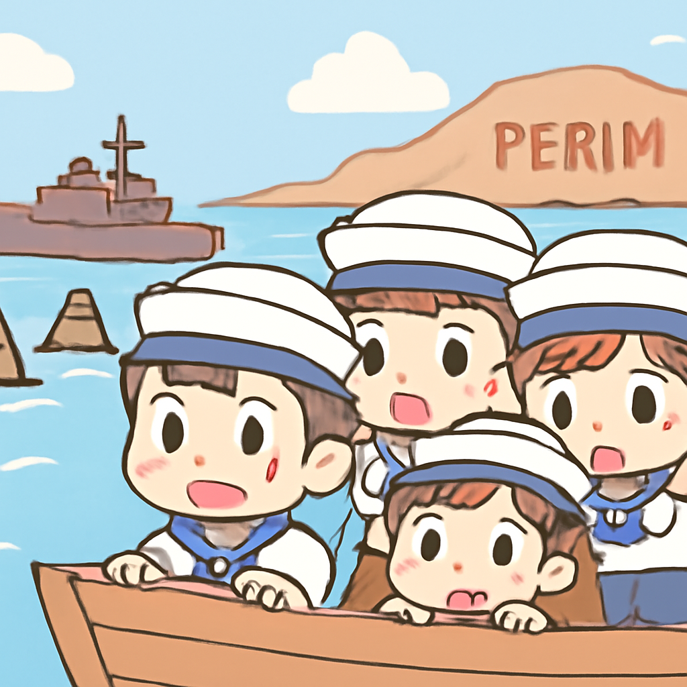
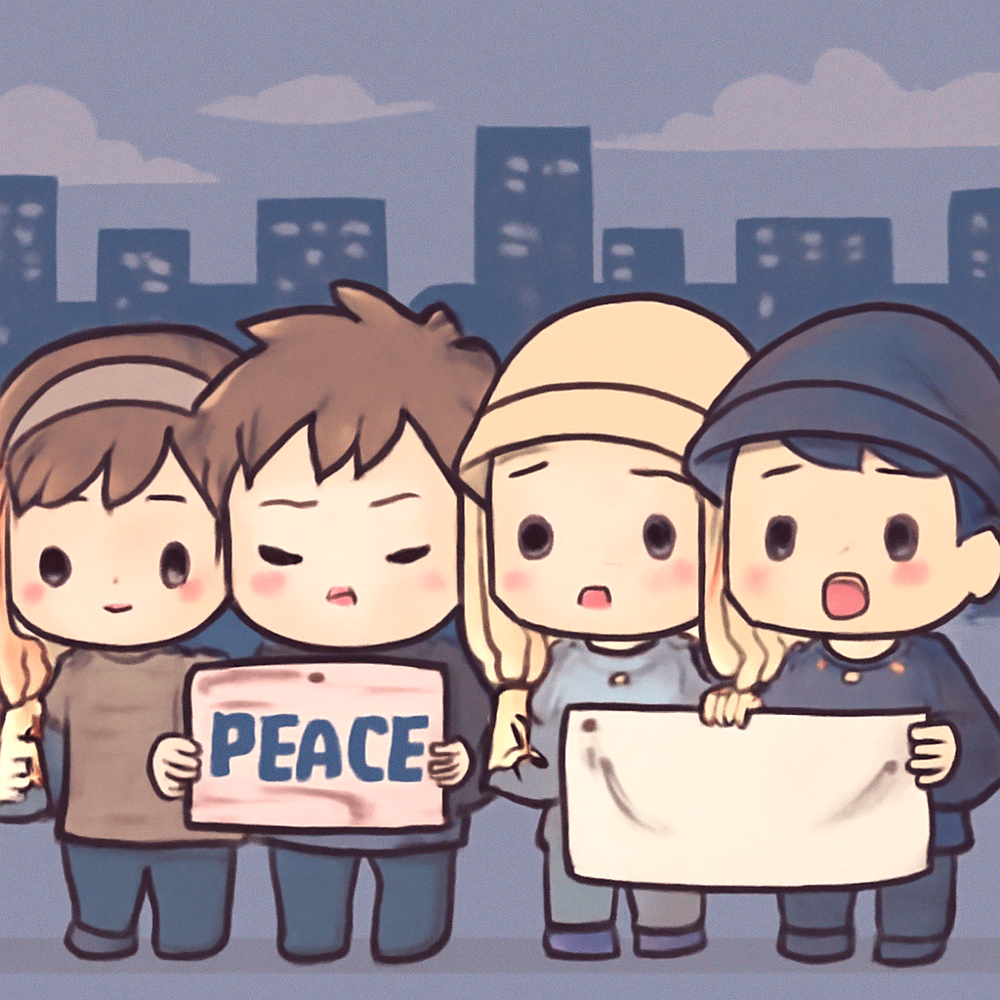

其一 · 也門 · 胡塞武裝控制紅海航道
胡塞武裝在也門獲得重要進展，影響全球貿易。

也門的胡塞武裝最近宣稱已經控制了紅海的重要航道，並且奪取了戰略性的佩里姆島。這不僅影響了該地區的安全，還可能對全球石油供應造成威脅，因為這是運輸中的一個關鍵點。隨著局勢升溫，國際社會也許要重新考慮如何保護這些航運路線了。能夠航行的船隻可能會開始舉行安全研討會。
🔗 原始新聞 ↗
2026-09-12 · 以古觀今，以笑抗愁
胡塞武裝在也門獲得重要進展，影響全球貿易。

也門的胡塞武裝最近宣稱已經控制了紅海的重要航道，並且奪取了戰略性的佩里姆島。這不僅影響了該地區的安全，還可能對全球石油供應造成威脅，因為這是運輸中的一個關鍵點。隨著局勢升溫，國際社會也許要重新考慮如何保護這些航運路線了。能夠航行的船隻可能會開始舉行安全研討會。
🔗 原始新聞 ↗
法國一列客運列車在諾曼第出軌，造成多人受傷。
今天在法國諾曼第，搭載180名乘客的客運列車在魯昂至卡恩的路線上意外出軌，造成至少44人受傷。事故原因目前尚在調查中，交通部長表示，這是一次嚴重的事故，讓人感到非常不安。希望受傷乘客能夠早日康復，畢竟搭火車本來應該是輕鬆的旅程，而不是翻滾的雲霄飛車。
🔗 原始新聞 ↗
以色列宣佈摧毀一個重大地下軍事基地。
在以色列南部，最近發生了一場強烈的爆炸，據報導，這是以色列軍方摧毀了一個大型真主黨地下基地的結果。這次爆炸的震動甚至被美國地質調查局記錄為相當於4.1級的地震。這一行動可能會對以色列及其鄰國的安全局勢產生深遠影響，未來的地區穩定仍然充滿挑戰。希望大家都能平安無事，畢竟和平的日子才是最美好的。
🔗 原始新聞 ↗
香港六四事件的活動人士面臨重刑。

香港的六四事件活動人士最近被判刑，最長可達七年，這標誌著該地區對於政治表達的打壓持續升級。這些活動人士曾經在香港是少數能夠公開紀念1989年天安門事件的人。如今，這一情況讓人不禁感慨，言論自由的空間愈來愈小。希望在未來，大家能夠再次自由地表達自己的想法，而不是在監牢裡思考。
🔗 原始新聞 ↗
中印兩國在金磚會議上展開影響力之爭。
在即將召開的金磚國家峰會上，中國和印度都希望能在這個平台上增強自己的影響力。中國希望通過金磚這個組織挑戰美國的全球地位，而印度則更想保持這個組織的多元性，讓各國不至於選邊站。這場影響力的競爭看似是政治的博弈，但其實對於這些國家的經濟發展也有著深遠的影響。希望這場會議能帶來一些好消息，讓我們的地球村更和諧！
🔗 原始新聞 ↗